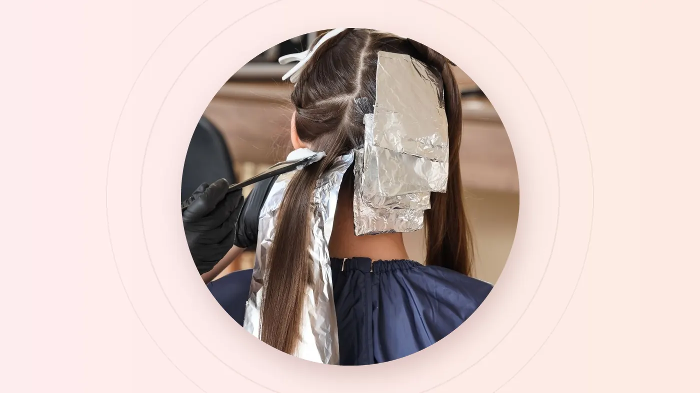

The short answer
Arrive with three reference photos (one you love, one you like, one you never want), a complete list of every chemical service from the past two years, and hair that was washed about a day earlier with no heavy oils or styling products. Block out more time than you think you need, and settle your humidity-proof aftercare plan before you leave the chair.
Hair colour is one of the few salon services where the outcome is shaped long before anyone mixes a bowl. The photos you bring, the history you share and even when you last washed your hair all change what your stylist can safely achieve in one sitting.
Get the preparation right and the appointment becomes a calm, confident conversation. Get it wrong and you risk a shade that looks nothing like the picture, or a result that fades to brass before your next payday. Here is how to set yourself up for the first outcome.
Why Preparation Matters More in Singapore
Colour behaves differently on this island. Year-round humidity makes the hair's outer cuticle swell and lift, which lets colour molecules escape faster. Strong UV light breaks pigment down, especially cool tones. Many of us also wash our hair daily because of the heat, and every wash carries a little colour down the drain.
Add the air-conditioned offices, MRT carriages and bedrooms we move between all day, and hair swings between damp and dehydrated several times a day. None of this means colour won't last. It simply means the shade you choose, the condition your hair is in and the routine you follow afterwards matter more than they would in a cooler, drier climate.
The Singapore rule of thumb: if a shade needs a toner refresh every four weeks in a mild climate, plan for it to need attention a little sooner here. Choose your colour with your real schedule in mind, not your most optimistic one.
One Week Before: Collect Your References
"Ash brown" means one thing to you, another thing to your stylist and something else entirely to the person who edited that photo on social media. Pictures close the gap. Save three kinds:
- One you love. The result you would book today if anything were possible.
- One you like. A more realistic cousin of your dream shade, often a step darker or softer.
- One you never want. Too red, too brassy, too flat? This photo is often the most useful of the three.
Look for photos taken in daylight, on hair with a similar length and texture to yours, and without heavy filters. Filters shift tones by several shades, so the "soft beige" you screenshotted may really be a warm caramel.
What you say vs. what it usually means
| You ask for | What it usually looks like | Worth knowing |
|---|---|---|
| Ash brown | A cool, smoky brown with little red or gold | Cool tones fade warmer in sun and humidity, so a toner refresh helps keep them smoky. |
| Milk tea brown | A soft, beige-leaning light brown | On naturally dark hair this usually needs some lightening first. |
| Caramel highlights | Warm, golden-brown ribbons through darker hair | Warm tones are forgiving and tend to fade gracefully. |
| Burgundy or wine red | A deep red-violet | Red molecules are among the quickest to wash out, so plan on colour-safe care. |
| Balayage | Hand-painted brightness that is softer near the root | Grows out gently, which makes it a good choice if you can't visit every few weeks. |
Your Hair History Is the Recipe
Hair keeps a record of everything that has happened to it. A box dye from two years ago may still be sitting in your mid-lengths, even if your roots are completely natural. Your stylist can't see that history just by looking, and the wrong assumption can lead to patchy results or unnecessary damage.
Before the appointment, jot down what you remember from roughly the past two years:
- Box dye or DIY colour, especially black or very dark shades
- Henna or "natural" dyes, which can react unpredictably with lightener
- Bleaching, highlights or balayage
- Rebonding, perms or digital perms
- Keratin or other smoothing treatments
- Colour done at another salon, and roughly when
Stylist's tip: dark box dye doesn't simply wash out. It builds up in the lengths, so lifting it to a lighter brown is often a gradual process over more than one session. Knowing this upfront lets your stylist plan a route that protects your hair rather than forcing it in one visit.
The 48 Hours Before
A lot of well-meaning clients arrive with freshly shampooed hair. In most cases it's better not to wash right before colouring, especially if lightening is involved. The natural oils on your scalp act as a light cushion against sensitivity.
- Wash about a day before your appointment, unless your stylist tells you otherwise.
- Skip heavy products. Hair oil, serum, wax and dry shampoo can coat the hair and stop colour from taking evenly.
- Leave your scalp alone. Avoid scalp scrubs, vigorous brushing or scratching that could irritate the skin.
- Flag any sensitivity. If you have ever reacted to hair dye, or your scalp is irritated or sunburnt, tell your stylist before anything is mixed. They may suggest a patch test or a different plan.
On the Day
Wear a comfortable, darker top that you won't mind if a stray drop lands on it, and eat something beforehand. Most importantly, give the appointment room to breathe. Rushed colour is rarely good colour.
| Service | Rough time to set aside |
|---|---|
| Single-process colour or root touch-up | Around 1.5 to 2 hours |
| Highlights or balayage | 3 hours or more |
| Colour correction | Often more than one session |
Timings depend on your length, thickness and the technique, so share your hair length when booking for a better estimate. During the consultation, these questions are worth asking:
- Can we reach this shade today, or will it take more than one session?
- How will this look in four weeks, not just today?
- How often will I need a touch-up or toner?
- What is the final price before we start?
The best colour appointments feel less like a gamble and more like a plan you both agreed on before the first brushstroke.
The First Two Weeks After
Freshly coloured hair is at its most vulnerable in the first few days, while the cuticle settles. This is when a little discipline pays off for months.
- Wait before the first wash. Stylists commonly suggest holding off for about 48 to 72 hours. Ask what suits your service.
- Go colour-safe. Switch to a gentle, colour-safe shampoo and conditioner.
- Turn the water down. Lukewarm water lifts the cuticle less than hot water.
- Protect from heat and sun. Use heat protection before styling and shield your hair from strong midday sun.
- Mind the pool. Chlorine and salt water fade colour quickly, so rinse straight after swimming.
- Plan your maintenance. Book your touch-up or toner before you forget.
Blondes and ash shades often benefit from a purple or silver shampoo once a week to keep brassiness away. Ask your stylist whether it suits your colour before you buy one.
Choosing a Shade That Survives Singapore
If low maintenance is the goal, lean towards shades that fade gracefully rather than dramatically.
Easier to live with
Natural and dark browns, chocolate, warm caramel tones and soft balayage that blends into your roots.
Worth the extra care
Ash and grey tones, blondes, pastels and vivid fashion shades, which need regular toning, treatments and gentle care.
Neither list is off-limits. The right shade is the one that fits the time you actually have for upkeep. Colour at On Hair Salon & Beauty is listed from S$58 to S$188+, with highlights in the same range, and the final price is confirmed after consultation. Check the full hair price list before you visit.
Frequently Asked Questions
Should I wash my hair before a colour appointment?
Usually not on the same day. Washing about a day before is a good rule, because your scalp's natural oils help cushion it during colouring. Come without heavy oils, wax or dry shampoo, and follow your stylist's advice if they suggest otherwise.
How long after colouring can I wash my hair?
Stylists commonly recommend waiting about 48 to 72 hours so the colour can settle. When you do wash, use lukewarm water and a colour-safe shampoo.
Can I go from black box dye to brown in one session?
Sometimes, but often not. Dark box dye builds up in the hair and can lift unevenly, so many stylists lighten it gradually over more than one visit to keep the hair healthy. A consultation will tell you what is realistic for your hair.
How much does hair colour cost at On Hair Salon & Beauty?
Colour and highlights are each listed from S$58 to S$188+. The final price depends on your hair length, thickness and the technique, and it is confirmed after consultation.
Final Thoughts
A great colour result starts with honest history, clear references and realistic expectations about Singapore's climate. Do the preparation, ask the four questions above, and protect your shade for the first fortnight. Your colour, and your stylist, will thank you.
Planning your next colour? Send your nearest outlet a photo of your hair in natural light, your reference pictures and a quick note on your hair history, and the team can suggest where to start.